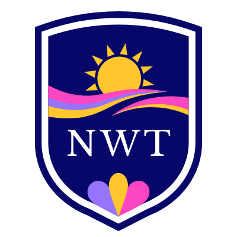

About South Wales Tutoring
Online tutoring with a local South Wales focus and the support of a wider UK tutor network. Our vision is simple: delivering a better future.
Enquire about tutoringDelivering a better future, one lesson at a time
South Wales Tutoring connects families with one-to-one online tutors for school subjects, GCSE revision and A-Level study.
We believe helpful tutoring begins by listening. That means understanding the learner, the exam board, what feels difficult and what a successful next step would look like. Our lessons are designed to be personal rather than a generic online course.
As part of North Wales Tutoring Group, we draw on a tutor network supporting learners across Wales and the UK while making it easier for South Wales families to find a relevant service.
Clear explanations, personalised lessons, honest support
The student comes first
We listen to a learner’s current understanding, goals and preferred pace before suggesting support.
The correct exam board
We ask about the qualification so lessons can focus on the right WJEC, Eduqas, AQA, Edexcel, OCR or CAIE content.
Flexible and straightforward
Online lessons, transparent starting prices and a simple conversation before you book.
Experienced tutors, focused on South Wales learners
South Wales Tutoring offers dedicated support for learners across the region, with access to experienced tutors and subject specialists throughout our wider group.
Our group supports learners with Maths, Physics, Chemistry, Biology, English, humanities and other subjects from primary level through A-Level. Being part of that network gives us access to tutors with different specialisms and teaching backgrounds.
South Wales Tutoring supports online learners in Cardiff, Swansea, Newport, Bridgend, the Vale of Glamorgan, Rhondda Cynon Taf, Caerphilly, Neath Port Talbot and nearby towns.
Explore North Wales Tutoring Group
Connected through the North Wales Tutoring Group network
About our tutoring
Helpful answers about online tutoring in South Wales.